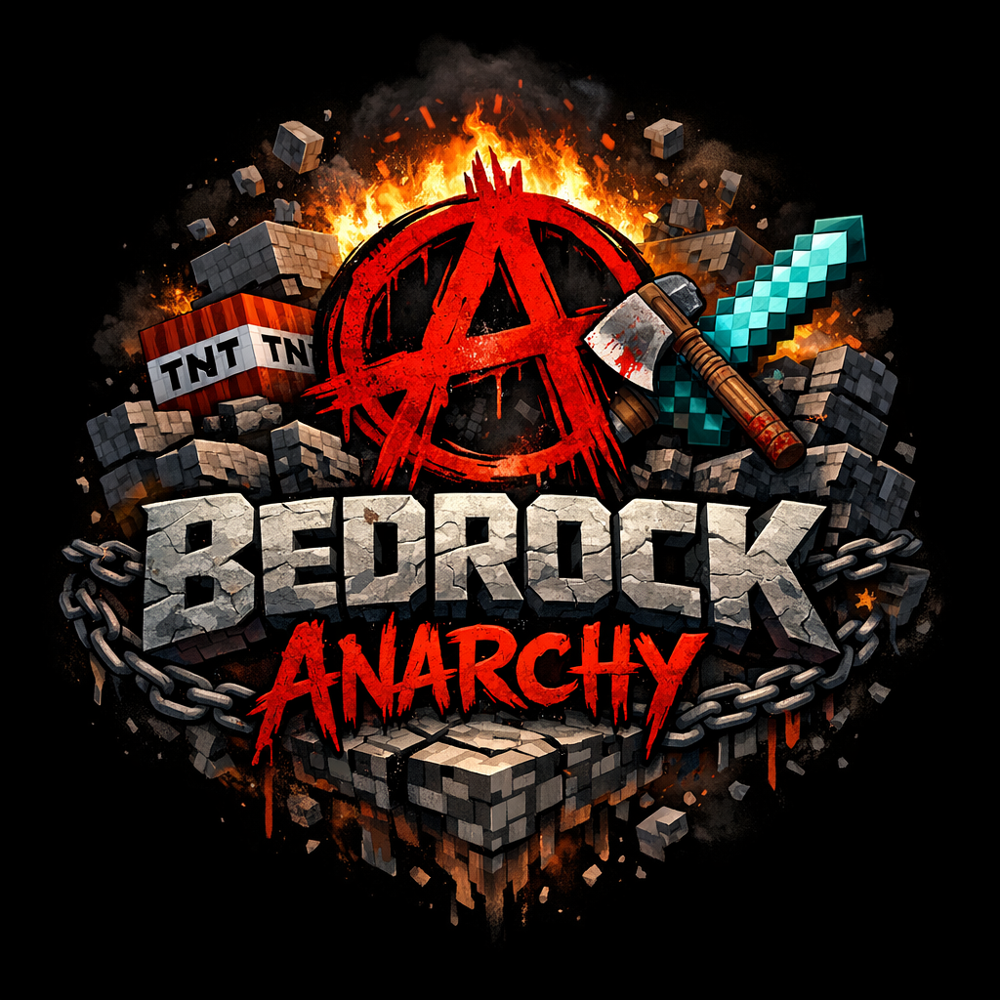

What to expect
A long-running world with PvP, raiding, griefing, and everything else that comes with anarchy.

BedrockAnarchyJava + Bedrock anarchy server
BedrockAnarchy is a crossplay anarchy server with a long-term map for both Java and Bedrock players.
About
This is an anarchy server where people build, raid, fight, team up, betray each other, and hide bases.
If you want to join, the address is here and that is really all you need.
Details
A long-running world with PvP, raiding, griefing, and everything else that comes with anarchy.
Java uses bedrockanarchy.org. Bedrock uses mc.bedrockanarchy.org (port 19132).
It is an anarchy server. Do what you want, and do not expect your stuff to stay safe.
Join